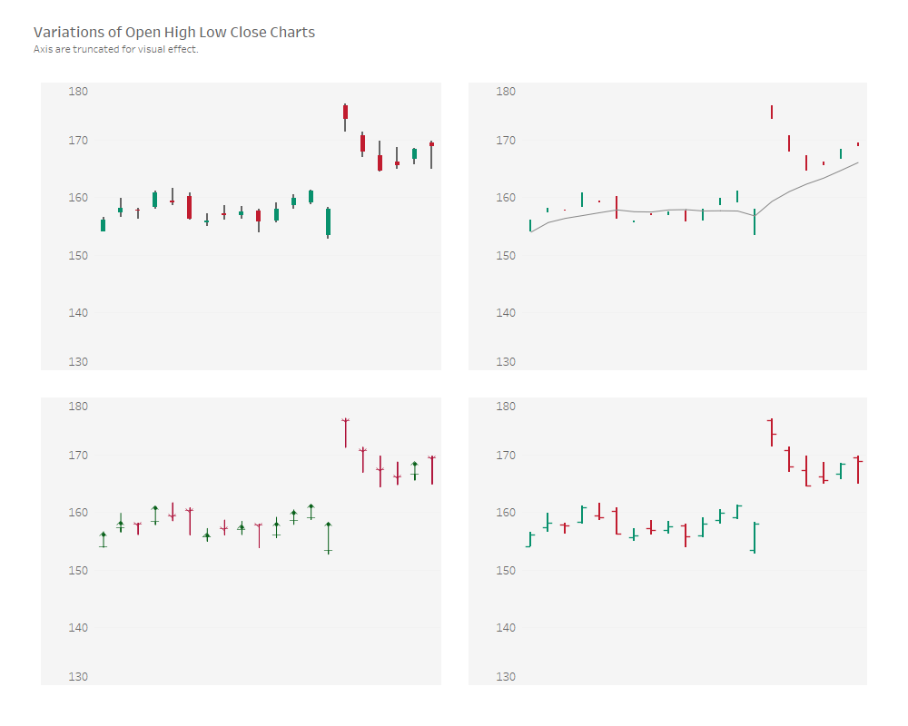
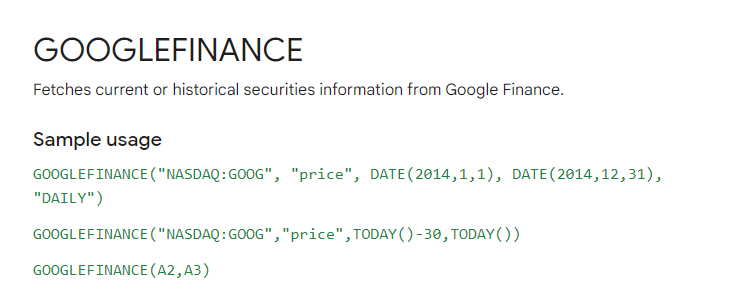
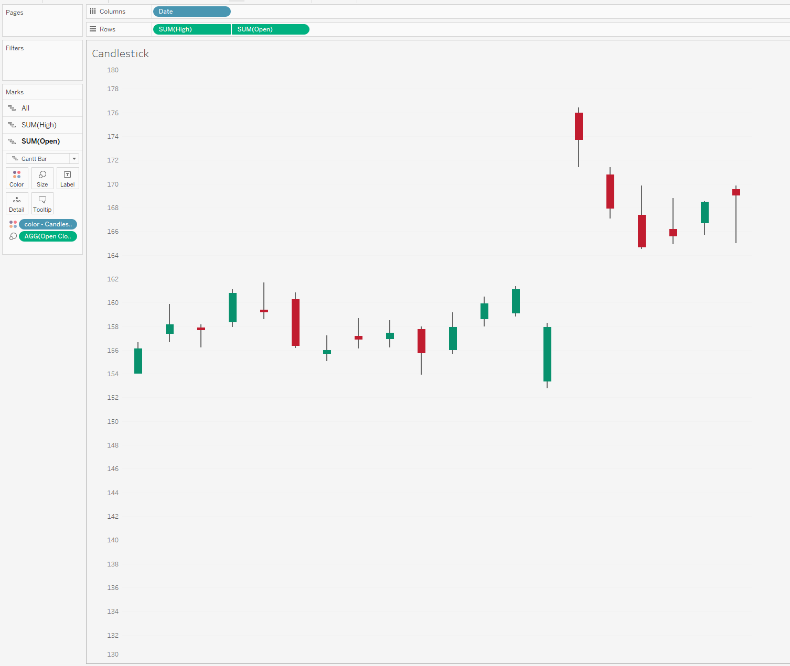
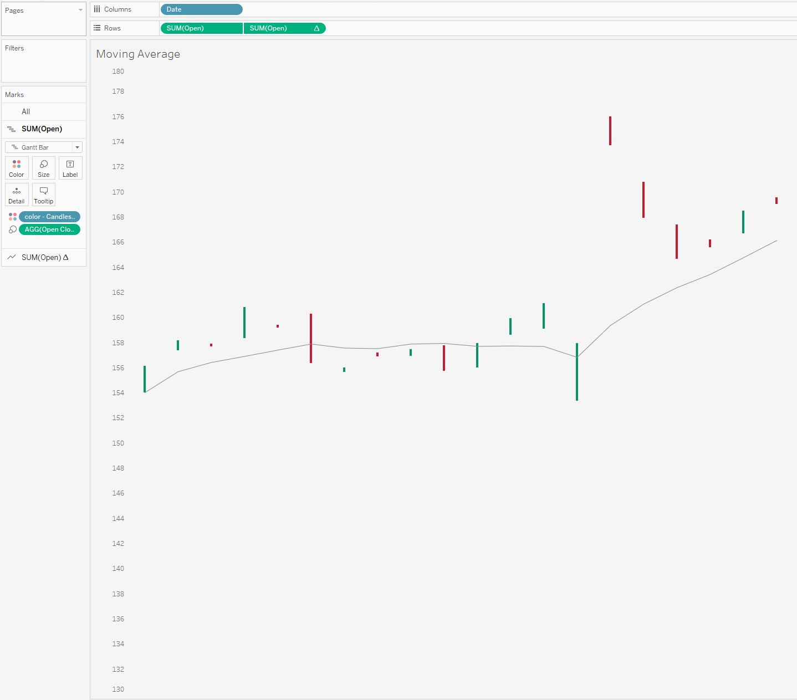
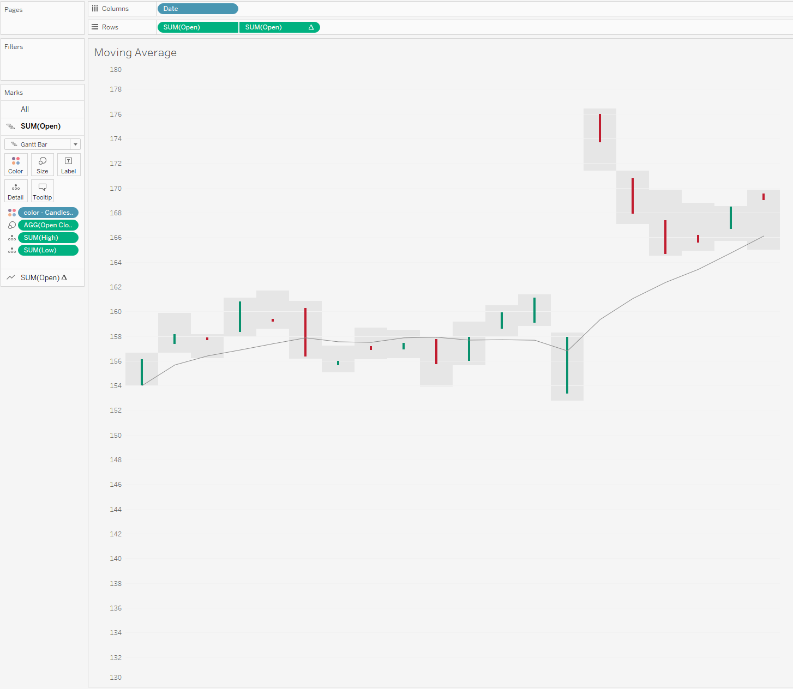
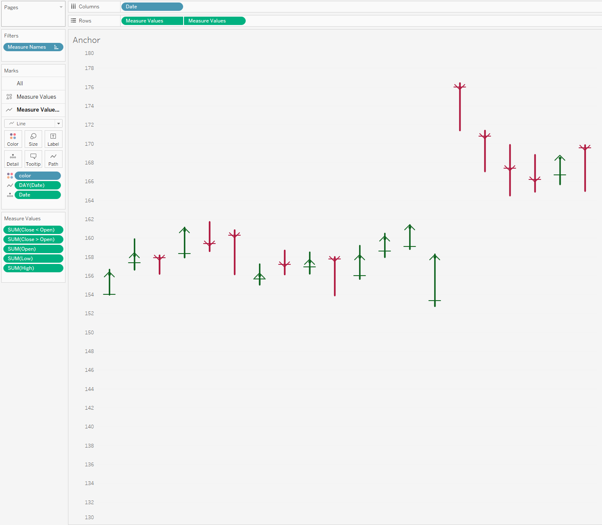
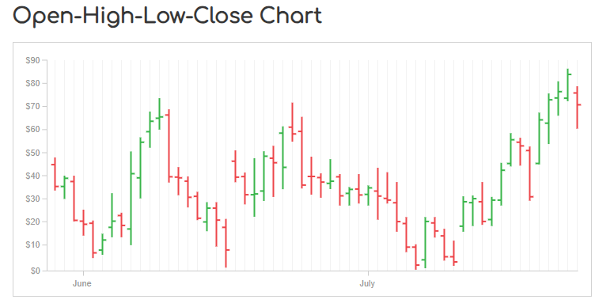
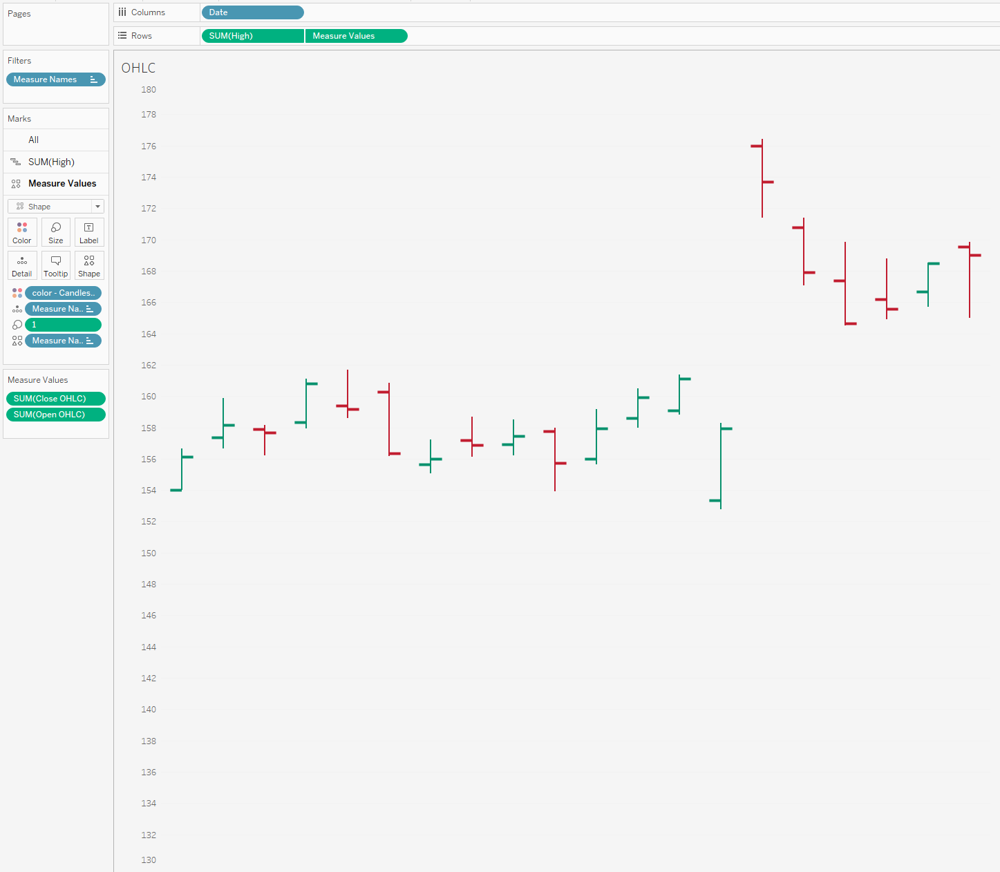
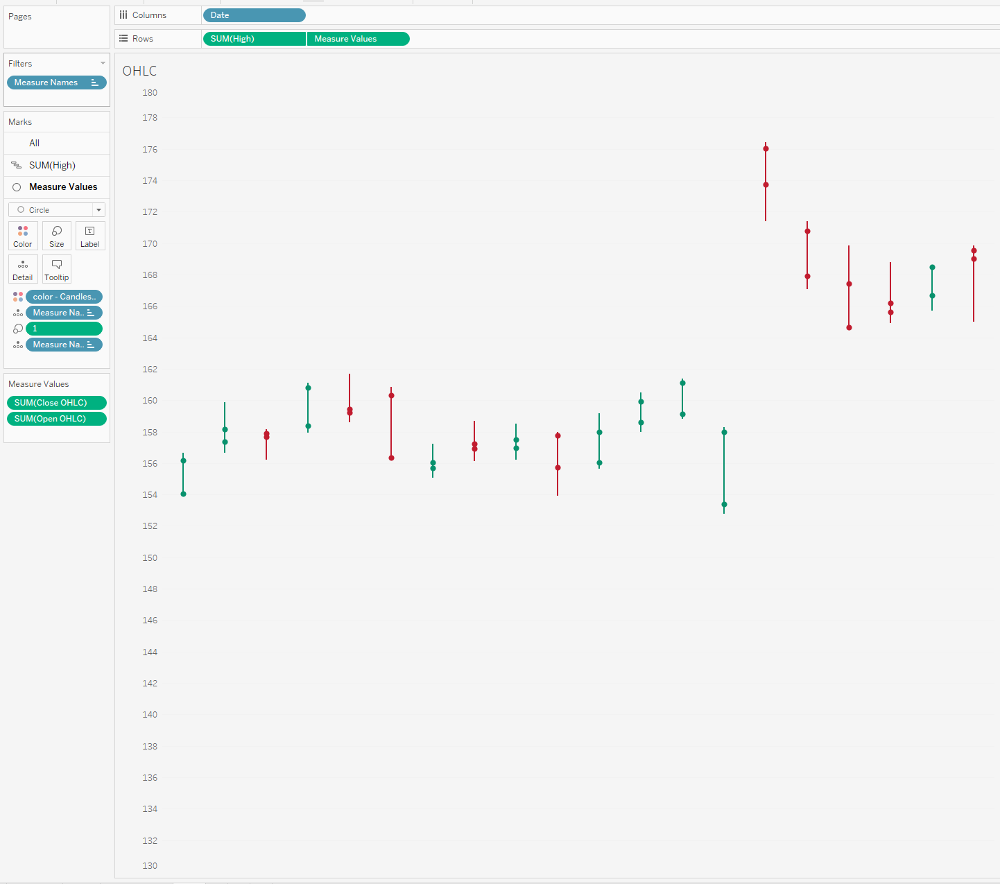

Hi all,
One for the "Finance Bros" this week. Only joking, but we will look to create different variations on the open high low close charts that are very popular, especially when looking at stock market variations.

These charts are all fairly simple to make - so will leave technical run-throughs for the more complex chart types.
This piece will be mainly a written chat around the different chart types and the design, as with all my workbooks - they workbooks are downloadable* so they should be easy enough to reverse! (*with the exception of paid work examples) Just click the tableau button under the header to be directed to the free visual.
Before we start please excuse the truncated axis throughout, it's simply so you can see the clear chart style throughout.
First up, if you want to create any type of stock or market type graph, google finance is your best friend. For these examples I quickly just took the example

The documentation for this you can find here.
You will want to amend the calculation where it says price with the open, close, high and low text.
There are four variations we will look to chat about today, as seen above.
Top Left is the candlestick chart.
Top right is a chart that looks at open and close with a running average line.
Bottom left is a anchor chart.
Bottom right I couldn't find an official name for so I am just going to call it the standard OHLC chart.
Lets start with the most popular of these the candlestick chart.

So I will start by saying this is my favourite variation in Tableau to build. The reason being is, we don't need any "shapes". The chart above will show the high and low for the stock through the use of the grey line. Just think min and max during a day.
The red or green gantt overlay is looking at whether it is falling or rising between its opening and close price. (A stock will change consistently in price over the course of a day remember)
For me this is the clearest way of showing fluctuations or swings throughout a day as well as seeing the net positive or negative change each day.
Only a few calculations are needed due to the use of the gantt marks. Two spread calculations one for the difference between the high and low, and another calculation for the spread between open and close. Then it is a simple dual axis with some amendments to size/
Which brings me onto example 2.
Adding in a reference line.

If you download the workbook you will see I put in a rolling average of 7 days (usually I suspect you would do this over a longer period but I only am showing a few days of data as it is)
I quite like this additional touch to show general trend which you don't get with the previous chart, but to make it as simple as possible it meant that I had to remove one of my dual axis from the previous chart so can't also overlay the low & high of the day. Trying to keep this as simple as possible so map layers weren't an option.
Theoretically you could add this context back in with a reference band but I'm not sure if its overkill or not. I'll let you be the decider.

Moving on in order of favourite ways of designing these charts we have the Anchor chart. I don't see too many of these on Tableau, probably because of the popularity of the candlestick chart.

Each symbol or ‘anchor’ represents a trading session.
The vertical line through the middle represents the highest price from the top (or starting) position, while the bottom (or end) represents the lowest price.
The short, horizontal line marker indicates the open price, while the arrowhead marks the close price.
I think the good thing going for it is the love for arrows. Arrows give clear direction and signage, and you theoretically wouldn't need the color to know what is going on (even though it does help!)
The only real negative with this chart is probably the way I built it for simplicity sake. I think it would be better to have more flexibility in being able to edit the arrow heads (currently they are shapes and I just don't think they come out well, both in size shape and definition), same with the line for the opening price. I think if we were to redesign this in a more technical way we could get some better results using actual lines.
Now the last example I came across from the Data Viz Catalog. You can read about the chart here.

On each single time period, an OHLC Chart plots a symbol that represents two ranges: the highest and lowest prices traded, and also the opening and closing price on that single time period (for example in a day). On the range symbol, the high and low price ranges are represented by the length of the main vertical line. The open and close prices are represented by the vertical positioning of tick-marks that appear on the left (representing the open price) and on right (representing the close price) sides of the high-low vertical line. Here is it in Tableau.

To be able to create this chart, again you need two shape files slightly offset from the middle to be able to appear to the right and the left of the chart based on opening and close. See if I change the mark back to a circle you'll notice that the marks aren't actually offset, it is the custom shape file.

Again whilst I like the simplicity to this chart - the idea of having to use a shape file ruin it for me a little.
So there are 4 ways that you can create custom finance charts geared towards stock prices.
Let me know what variation you think works best, and whether there any other alternative chart types important to take into consideration.
Speak soon,
LOGGING OFF,CJ